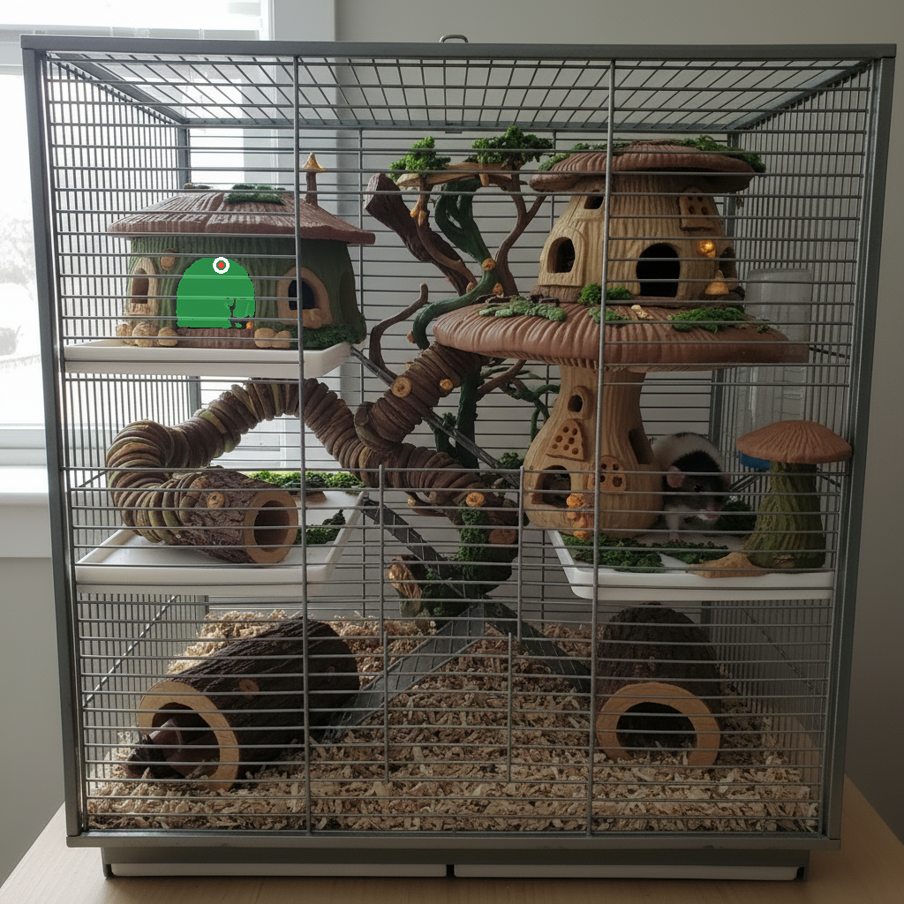
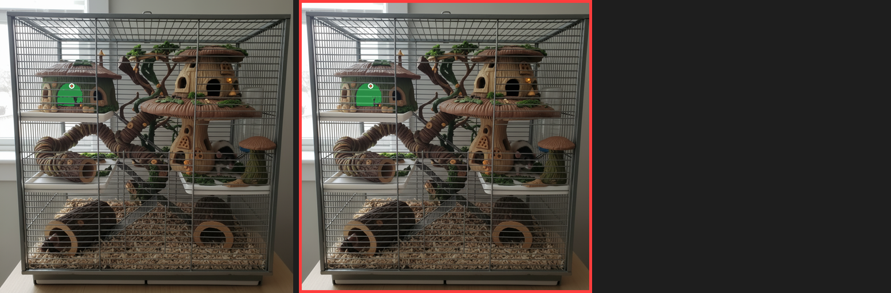
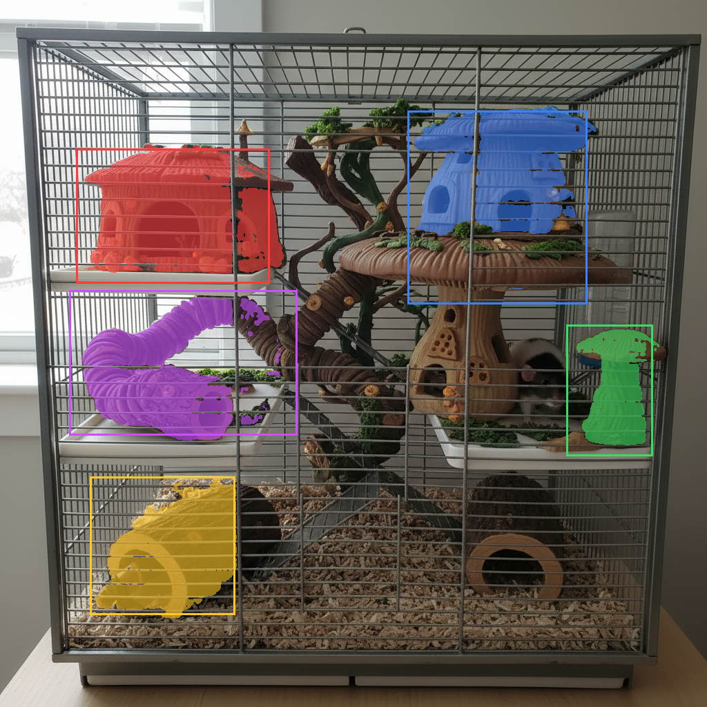
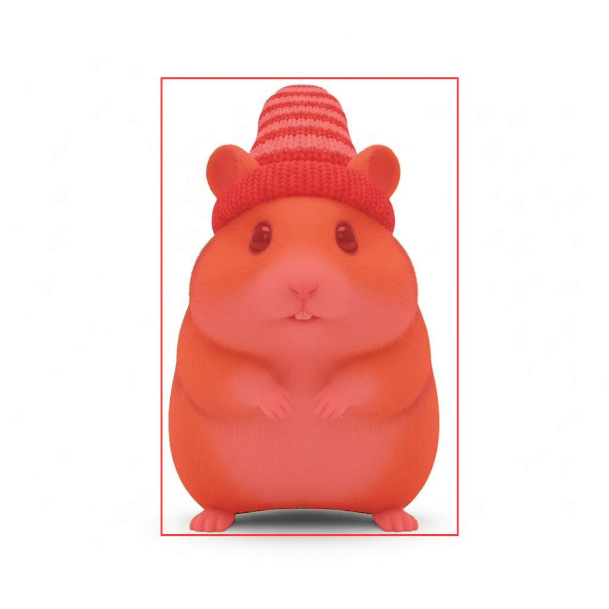

结论：单点 hover（形态 A 的机制）严格命中 4/9 ≈ 44%，不达标；拉框（box 提示）14/15 干净整件。C = 拉框输入 + G4d 发光视觉。模型 = 自托管 SAM2.1（Apache-2.0，纯 CPU）。

红点点在绿色树屋上，模型只返回了门拱那一小块（绿色区域）——部件级 mask，不是整件。9 个测试点里这类失败占多数。

同一个点的三个尺度候选（红框 = 模型按置信度选中的那个）——正确整件有时存在于其他尺度，但模型自动选择不可靠。

五个彩框 = 模拟用户拉框；每个色块 = 返回的 mask。蘑菇屋、树屋、弹簧管、木桩全部隔着笼网整件拿下，mask 贴物品轮廓而非矩形。发光就渲染在这个轮廓上。

风格化效果图上同样成立。15 框中唯一失败是半透明水瓶（已记为已知弱项）。
在终端跑：open "
探索稿里的「拉框」形态 B 就是 C 的输入方式，「选中发光」就是 C 的反馈——两者拼起来即为最终形态。发光轮廓在实现时用真实 mask 的简化多边形（IoU 0.977）。
每图 embedding 一次 1.4–4.7s（效果图生成后预热），之后每次拉框 40–200ms；纯 CPU、峰值内存 3.2GB、模型 154MB，现有 ECS 可托管。ECS 实机延迟未测（估编码 3–15s）。花费 $0。